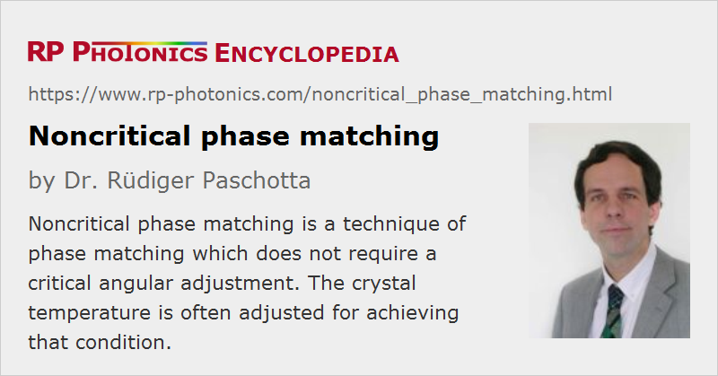

Noncritical Phase Matching
Definition: a technique of phase matching which does not require a critical angular adjustment
More general term: phase matching
Opposite term: critical phase matching
German: unkritische Phasenanpassung
Categories: nonlinear optics, methods
How to cite the article; suggest additional literature
Author: Dr. Rüdiger Paschotta
Noncritical phase matching (sometimes called temperature phase matching or 90° phase matching) is a technique for obtaining phase matching of a nonlinear process. The interacting beams are aligned such that they propagate along some axis of the birefringent nonlinear crystal. The phase mismatch is minimized by adjusting the crystal temperature such that the phase velocities of the interacting beams are equal.
The attribute “noncritical” comes from the fact that this technique is relatively insensitive to slight misalignment of the beams. Another advantage is that the phenomenon of spatial walk-off is avoided. Therefore, the conversion efficiency can often be higher with noncritical phase matching, because the beams involved can be more tightly focused. The disadvantage, however, is that the crystal temperature is usually somewhat away from room temperature, so that a temperature-stabilized crystal oven is required. Also, both the crystal and any anti-reflection coatings which may be required must be able to withstand the operation temperature and also changes between that temperature and room temperature.
There are some cases where the phase-matching temperature is relatively close to room temperature. It is then often possible to find a critical phase matching configuration with similar nonlinear and dispersive properties, and exhibiting only a small spatial walk-off.
The technique of quasi-phase matching allows for noncritical phase matching with crystals which normally could only be critically phase matched.
Questions and Comments from Users
Here you can submit questions and comments. As far as they get accepted by the author, they will appear above this paragraph together with the author’s answer. The author will decide on acceptance based on certain criteria. Essentially, the issue must be of sufficiently broad interest.
Please do not enter personal data here; we would otherwise delete it soon. (See also our privacy declaration.) If you wish to receive personal feedback or consultancy from the author, please contact him e.g. via e-mail.
By submitting the information, you give your consent to the potential publication of your inputs on our website according to our rules. (If you later retract your consent, we will delete those inputs.) As your inputs are first reviewed by the author, they may be published with some delay.
See also: critical phase matching, phase matching, quasi-phase matching, nonlinear frequency conversion, crystal ovens
and other articles in the categories nonlinear optics, methods
|  |
If you like this page, please share the link with your friends and colleagues, e.g. via social media: 


These sharing buttons are implemented in a privacy-friendly way! |
2020-04-23
Does operation in the NCPM regime also relax the spectral acceptance constraint, so that NCPM is useful in ultrafast frequency conversion?
Answer from the author:
No, this is a separate issue. If you have a nonlinear crystal which you can phase-match critically or non-critically, the spectral acceptance bandwidth will generally differ in those cases, but I don't think it is generally better for noncritical phase matching.